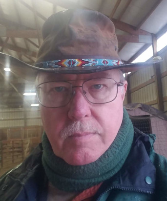

1953 -
Dirt Bike
In the realm of the fearless, I once tread,
A dirt bike beneath me, courage widespread.
Through the rushes of wind, I embraced the thrill,
But Fate's cruel touch, my spirit it did still.
A fractured bone, a poignant price to pay,
I gazed upon my racing dreams in disarray.
With a heavy heart, I bid farewell, resigned,
To seek solace in memories, forever enshrined.
Copyright © 2023 Wylie Paul Duke. All Rights Reserved.
Joaquin
In the wild embrace of Jemez mountains' might,
Lies a cherished haven, hidden from sight.
A camp, at nature's edge, by wisdom crowned,
Where untamed beauty and serenity abound.
A four-wheel drive road, rugged and rough,
Leads to this sanctuary, where hearts find enough.
Through towering pines and shrub oak's embrace,
A slice of paradise, in this sacred space.
A half-mile up, springs and water gleam,
Gifting life's elixir, like a tranquil dream.
A creek meanders through, gentle and serene,
Humming its melody, in nature's harmony keen.
The camp rests at the edge, a meadow so fair,
Surrounded by nature's guardians, the pines with care.
Unspoiled by the masses, untouched by man's hand,
A refuge of peace, where nature's reign will stand.
So venture forth, to this secret oasis unknown,
Jemez mountains' hidden gem, where souls are shown.
Embrace the solitude, let wilderness weave its spell,
This camping spot, a sanctuary where memories dwell.
Copyright © 2023 Wylie Paul Duke. All Rights Reserved.
The Rancher
A herd of cows grazed in the field,
Their gentle eyes, a bond concealed,
Their purpose known, their fate resigned,
For nourishment, our lives entwined.
Days turned into seasons, swift as the breeze,
As the cows grew, so did unease,
The rancher knew their end was near,
A bittersweet truth, heavy to bear.
Yet with gratitude, he approached the task,
Sacrifice given, no questions asked,
For on his table, a meal so fine,
A testament to nature's endless rhyme.
Copyright © 2023 Wylie Paul Duke. All Rights Reserved.
Portrait
In pixels captured, moments alive,
A camera lens, my heart did strive,
To freeze a sliver of fleeting time,
A dance of light, a rhythm sublime.
From lofty mountains kissed by the sun,
To bustling streets where stories run,
Through laughter, tears, and tender sighs,
I glimpsed eternity in strangers' eyes.
But alas, a twist of fate's cruel hand,
A computer crash, a broken strand,
Lost in the void, my images gone,
A shattered dream, a mournful song.
Now in the depths of my mind's eye,
Those lost fragments refuse to die,
And though my camera's lens may fail,
The power of memory will forever prevail.
Copyright © 2023 Wylie Paul Duke. All Rights Reserved.